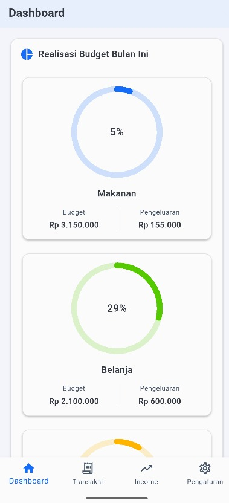
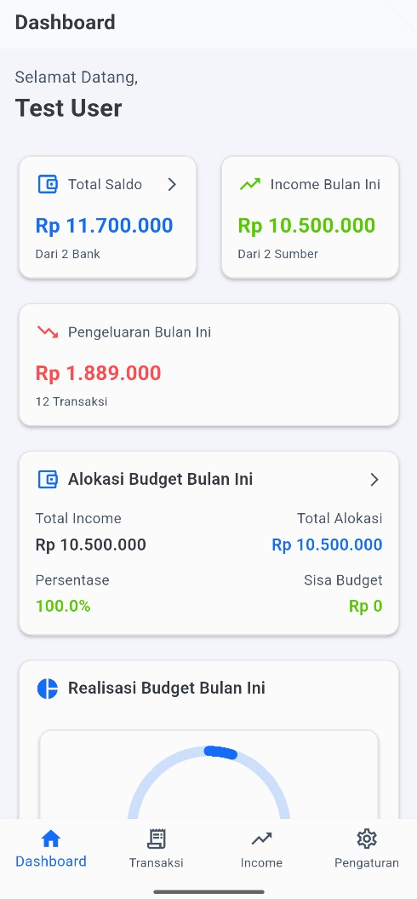
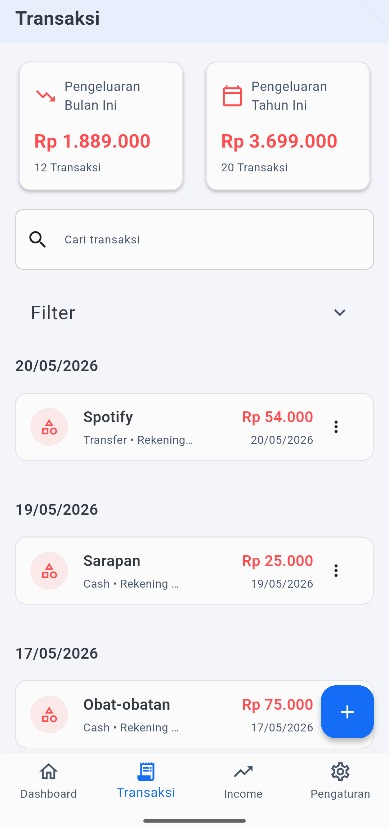
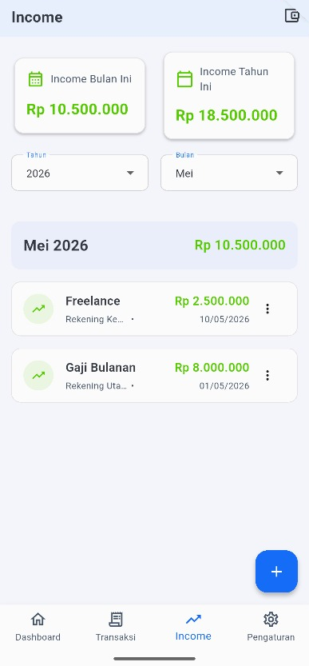

Saldo multi-rekening
Total saldo dari semua rekening bank dan kas, diperbarui di setiap transaksi.
Flutter · Offline-first
Aplikasi keuangan pribadi untuk mencatat pemasukan, pengeluaran, dan anggaran bulanan di banyak rekening — semua tersimpan di perangkat, tanpa server.



01 — Anggaran

02 — Fitur utama
Dashboard menjawab tiga pertanyaan yang paling sering muncul: berapa saldo saya, berapa yang masuk, dan berapa yang keluar.
Total saldo dari semua rekening bank dan kas, diperbarui di setiap transaksi.
Gaji, freelance, dan sumber lain, bisa difilter per bulan dan tahun ke tiap rekening.
Pengeluaran dikelompokkan per tanggal, dengan pencarian, filter, serta total bulanan dan tahunan.
Anggaran bulanan berdasarkan persentase pemasukan, dengan realisasi per kategori.
SQLite lokal dengan migrasi berversi hingga schema v7 dan composite index agar query cepat.
Password di-hash dengan SHA-256, dan sesi tersimpan di perangkat.
03 — Di balik layar
8 modul fitur · masing-masing dibagi tiga lapis
State reaktif, satu layar per fitur
Satu use case per operasi (single responsibility)
Memetakan data ke entitas domain
Schema v7, migrasi berversi